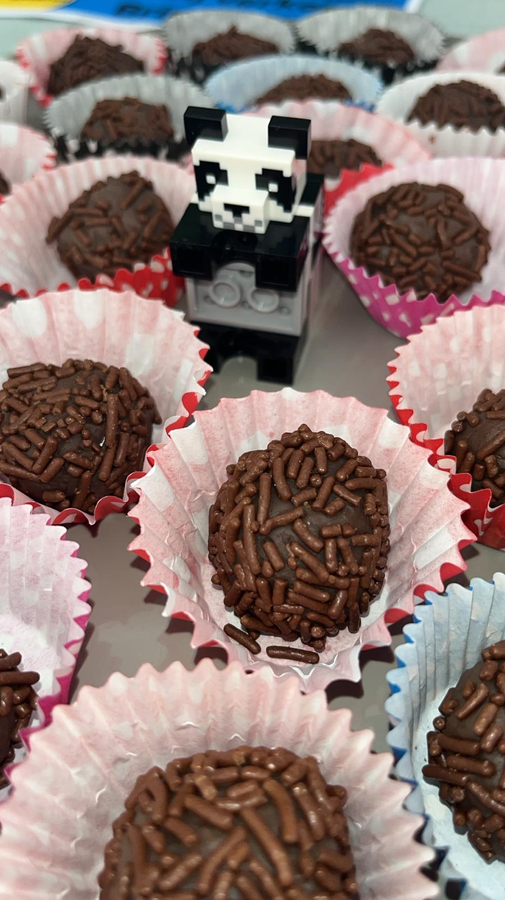

Brigadeiros zijn een populair Braziliaans toetje gemaakt van gecondenseerde melk, cacao en chocolade.
Bij BRIGADELFT maken wij verse brigadeiros met veel zorg, passie en een vleugje Braziliaanse gezelligheid.
Laatste Stap. smullen maar!!!

We verkopen brigadeiros lekker goedkoop en ze zijn ook nog eens erg lekker!
Altijd vers bereid met verse ingredienten